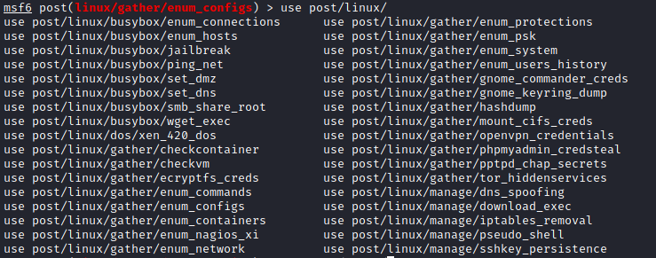

metasploit
•
post/linux/gather/enum_configs collects configuration files found on commonly installed applications and services, such as:
◇ Apache
◇ MySQL
◇ Samba
◇ Sendmail
◇ ...
If a config file is found in its default path, the module will assume that is the file we want.
msf> use post/linux/gather/enum_configs
msf> set session <id>
msf> run
•
post/linux/gather/enum_systemThis module gathers system information. It collect
◇ installed packages
◇ installed services
◇ mount information
◇ user list
◇ user bash history
◇ cron jobs
msf> use post/linux/gather/enum_system
msf> set session <id>
msf> run
Other Post Exploitation Linux modules
